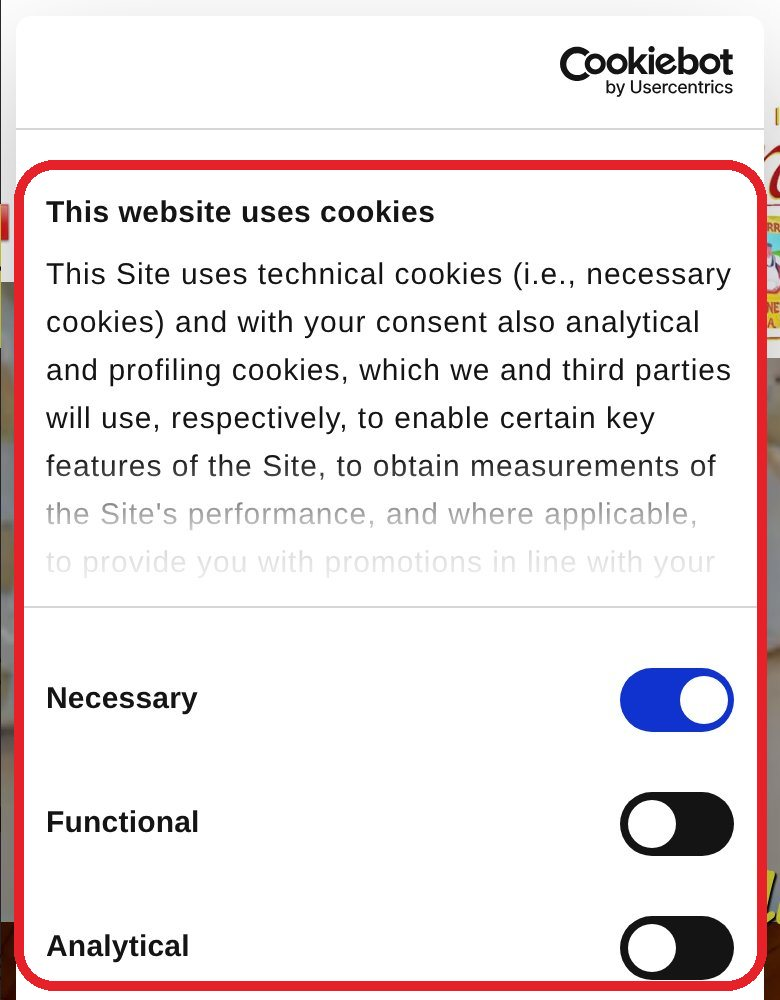
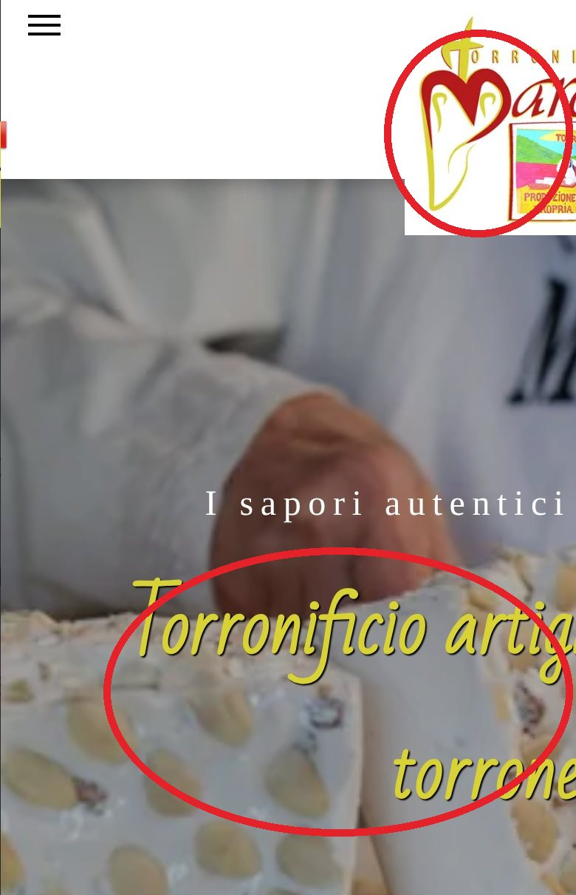
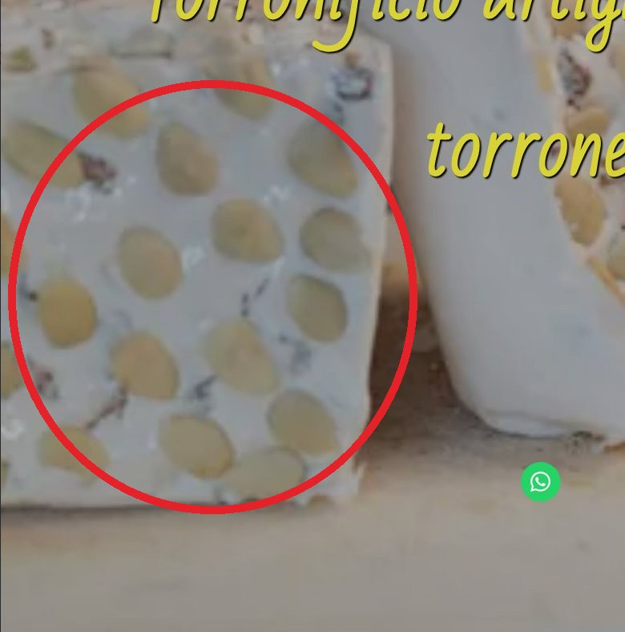

01
Un banner in inglese copre tutto
Su telefono il banner dei cookie occupa l’intera prima schermata ed è scritto in inglese, su un sito italiano.
Le due prime schermate su telefono, fianco a fianco. Trascina il cursore, anche con il dito.
← Trascina →
A sinistra il sito di oggi: il banner dei cookie, scritto in inglese, occupa tutta la prima schermata. A destra la proposta: foto vere del laboratorio, titolo leggibile, numero di telefono e WhatsApp sempre a portata di pollice.

Su telefono il banner dei cookie occupa l’intera prima schermata ed è scritto in inglese, su un sito italiano.

Su telefono la pagina è larga 768 pixel invece di 390: titolo e logo escono dallo schermo e bisogna scorrere di lato.

Su telefono la foto grande è una versione piccola (640 px) ingrandita oltre il doppio: il torrone appare sfocato.
Misure del 15 ottobre 2026 con Lighthouse in modalità telefono. Il sito attuale è stato misurato online; il sito nuovo in locale (fuori dal server definitivo, senza cookie banner né statistiche): i valori reali dipendono dall’hosting.